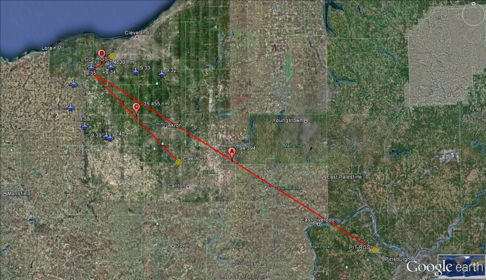
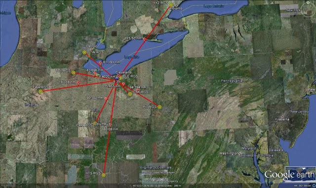
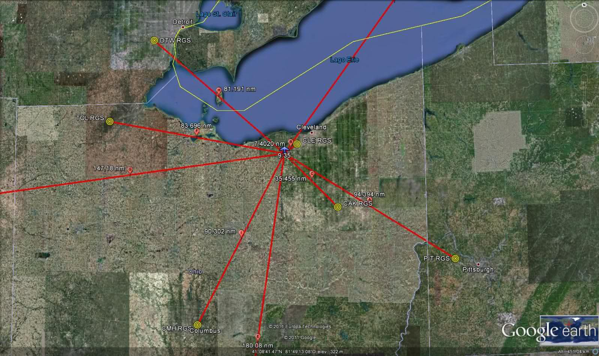
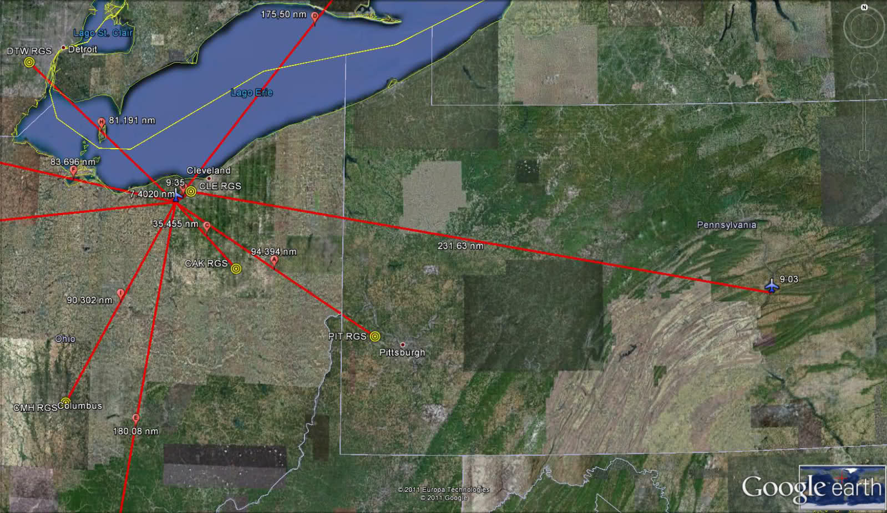
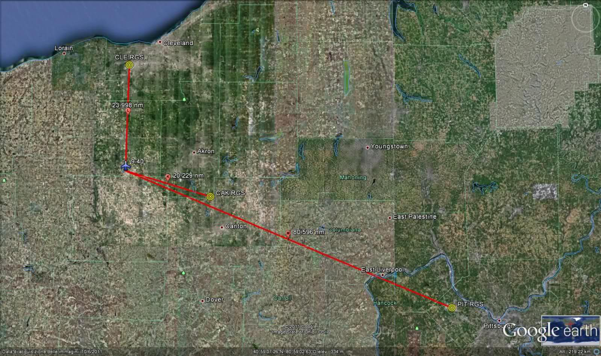
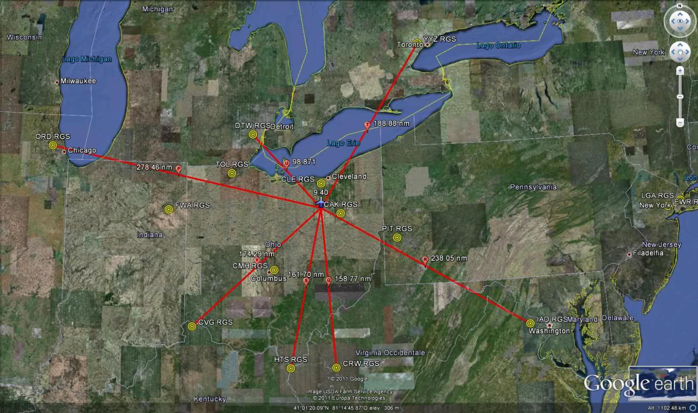

As explained in the introductory post, Warren Stutt and other people on Unexplained Mysteries claim, based on the
ARINC logs publicly available, that the RGS (remote ground station) which actually transmits an uplink sent by the airline is indicated in the "Stn=" field within the first ULBLK block, while the RGS shown in the ULMSG block (which precedes the ULBLK block and represents the ACARS message as sent by the airline) only indicates the "predicted RGS" based on the original flight plan. One of the several problems with this claim is the fact that, if we accept this theory, then we must necessarily conclude that United 93 constantly flew within the Pittsburgh's RGS coverage area with no discontinuity from 9:23 EDT to 10:12 EDT without being detected by any other RGS with stronger signal for almost one hour. As anyone can easily notice reading through the 211 pages PDF of the ARINC logs, the station reported in the "Stn=" field in all the ULBLK blocks from 9:23 EDT until the end of the ACARS communications is always "PITC6", with the sole exception of a couple of occurrences for "Stn= IADA6" at 10:12 EDT in the final instants of the aircraft's ACARS log history. This raises the question as to how could United 93 possibly make the famous U-turn above Cleveland before disappearing from the radar screens as secondary track at 9:41 EDT in the vicinity of Canton, as reported by the 9/11 Commission (1), and yet never enter either in the Cleveland (CLE) or in the Akron/Canton (CAK) RGS coverage area.
In order to determine the distance of United 93 from the closest ground stations during the U-turn over Cleveland, I used the official radar positions for United 93 from 9:32 to 9:40 EDT (which corresponds to the time when United 93 allegedly made the U-turn over Cleveland), as provided by the
84 RADES Radar Data Spreadsheet released through FOIA. Then, I used
GPS Visualizer to calculate the distance from the aircraft's position and the PIT, CLE and CAK remote ground stations respectively. Finally, I reported the resulting data into a Google Earth map to provide a visual representation of the Lat/Long position of the aircraft when messages #7, #8, #10, #11 and #12 were uplinked from the United Airlines dispatchers (2) and its distance from the closest ground stations.
|  |
| Distance of United 93 from CLE, CAK and PIT remote ground stations at 9:35 EDT |
Any blue aircraft icon on the map above represents the relevant position of United 93 as detected by the DTW radar site. The timestamp (i.e. 9:32) indicates the time of the radar hit. As anyone can notice at first glance, between 9:32 EDT and 9:36 EDT United 93 flew literally on the top of the Cleveland's RGS (CLE). After 9:37 EDT the aircraft began the second part of its U-turn heading SE to the direction of the Akron/Canton's RGS (CAK) while remaining at moderate distance from the CLE RGS. During this timeframe several messages were sent to the aircraft from UAL dispatchers, yet not one single occurrence for "CLEXX" or "CAKXX" is reported as "Stn=" in any ULBLK block, nor such transceivers appear as "BepStnName =" within any datalink from the aircraft (DLBLK), which is at the very least unexpected. Translated, this means that during its U-turn over Cleveland United 93 was not detected at any time by any Cleveland or Akron/Canton transceiver, but continued to communicate with the ARINC CPS through the Pittsburgh's station (PITC6), who was at more than 90 nm. Of course, it would be very interesting to analyze the radar hits
after 9:40 EDT. However the last radar position available for
United 93 before the hijackers allegedly turned off the transponder was
detected at 9:40:03 EDT and was 41°00'38.662"N 081°51'46.830"W.
Position of United 93 at 9:35 EDT
Message #10 (according to the Winter's numbering) was sent by the UAL dispatcher Chad McCurdy exactly at 9:35 EDT. Therefore this message offers an excellent case study. As we can see from the map above, at 9:35 EDT the aircraft was literally flying over the CLE RGS. This is what Winter declared in 2002 in his interview to the FBI about this message:
Message #10 was from UAL flight Dispatcher CHAD McCURDY to the aircraft.
[…]
Message #10 was sent to the aircraft from CHIDD and was sent to
the ACARS screen only. The RGS in this instance was near Cleveland, OH
CLE from the line "AN N591UA/GL CLE..."
This is the log of this uplink as it appears from the printout of ACARS logs provided by Ed Ballinger to the 9/11 Commission:
HOWS THE WX. CAN DISPATCH BE OF
;09111336 108575 0625
Finally, this is how the complete ARINC log for this message appears in the ARINC logs:
According to Warren Stutt and other posters on the Unexplained Mysteries' forum, the RGS shown after "AN N591UA/GL" field in the first log above (taken from Ballinger's logs) and the "Target Stn=" field within the ULMSG block (in the ARINC log screenshot) only indicate the predicted RGS, that is the RGS provided by the airline when the message is originally sent. In other words, it is the RGS expected after a certain time of flight according to the original flight plan. According to this theory, the RGS who actually transmits the ACARS is indicated in the first ULBLK block in the "Stn =" field. If this is true, then PITC6 and not any closer RGS transmitted the message sent by CHAD MCCURDY at 9:35 (as well as any other uplink until 10:12 EDT).
Using GPS Visualizer, I calculated the distance from the position of the aircraft at 9:35 EDT and the PIT, CLE and CAK remote ground stations. These are the Lat/Long positions shown on the map:
| Aircraft/RGS |
Lat/Long position |
| United 93 at 9:35 EDT |
41°20'17.89"N 81°58'55.62"W |
| PIT RGS: |
40°29'29.40"N 80°13'57.72"W |
| CLE RGS: |
41°24'38.88"N 81°50'58.18"W |
| CAK RGS: |
40°54'53.70"N 81°26'10.69"W |
And these are the distances between the above coordinates as determined by the GPS Visualizer's calculator:
| United 93 at 9:35 EDT |
Distance (in nm) |
| PIT RGS (see red pointer A): |
94.394 |
| CLE RGS (see red pointer B): |
7.4020 |
| CAK RGS (see red pointer C): |
35.455 |
If we believe to the claim supported by Stutt and other people on Unexplained Mysteries, the Pittsburgh's RGS had at 9:35 EDT the strongest signal although its distance from United 93 was 94.394 nm. For some obscure reason, the PIT station overrode both the Cleveland's RGS (CLE), which was at less than one tenth of its distance (7.4020 nm) and the Akron/Canton's RGS (CAK), who was at only 35.455 nm (i.e. well less than half the distance from PIT). If one has a minimal knowledge about how ACARS really work in the real world, the only possible conclusion after reading this data is that something definitely does not add up, either in the theory or in the data themselves. Giving priority to a station at more than 94 nm while having a station as close as 7 nm available and, in the event this were inoperative or temporarily unavailable due to congestion or any other interference, an alternative ground station at only 35 nm as a second option, is something we would definitely not expect from the CPS (the ARINC's Central Processing System that processes each and every message to and from any aircraft). At the very least, this situation is to be considered as highly abnormal, if not completely impossible. True is that there are sometimes instances where the closest station is not always the best station, for example in case of message collisions, terrain blockages, metropolitan interferences, temporary obstructions. Whenever the transmission through the best
station is not successful, the message delivery occurs through a logical sequence of "next best" choices of stations. However, we know that the CLE and CAK ground stations were operative on the morning of 9/11, as testified by several occurrences for CLEA2, CLEB2 and CAKA2 in the "BEPStnName =" field both in the UA93 and in the AA77 log history. Actually what happens in the real world (and can be confirmed by any ACARS expert) is that the closest station is in almost 100% of cases the chosen station because of its signal strength.
Another claim raised by Warren Stutt and his followers on Unexplained Mysteries' forum is that the stations reported in the "BepStnName =" fields within the DLBLK blocks designate the ground stations "within range" at a particular time:
The DSP
(ARINC) makes use of the location downlinks referred to in previous
documents to keep its internal routing tables updated, but the airline does not.
The DPSs use of this is evident by the ARINC 620-4 documentation and
from the PDF supplied by Warren Stutt. In fact, Warren's PDF shows us a
perfect example of the Category A network protocol in action with each
DLBLK that you see following each ULMSG and ULBLK reference. The
aircraft's omnidirectional transmissions are picked up by every RGS
within range and it appears as though the routing table sequences a
priority based on signal strength of those transmissions; the RGS
with the strongest signal received is assigned as the initial station
for future uplinks. This routing table is dynamically updated with each
downlink from the aircraft, just as the previously uncovered reference
material has described, and this is distinct from the static information
(i.e. the GL text element which I outlined in my previous post) which
is supplied by the airline dispatch in each message sent to the DSP for
delivery.
I marked the most significant parts of the above claim in bold. The first one is "but the aircraft does not", which means that the targeted station reported in the ULMSG blocks is never dynamically updated by the CPS based on the actual positional data and always designates the expected RGS based on the flight plan. This claim is flatly contradicted by several cases that I will present in separate posts in the next future. However, for the purposes of the current analysis, it is more important to focus on the second claim marked in bold: "The aircraft's omnidirectional transmissions are picked up by every RGS within range". If this were true, then we would expect to see some references to Cleveland's and/or Akron/Canton's transceivers (such as "CLEXX", "CAKXX") which were clearly "within range" at 9:35 EDT as shown in the map. However, this is not what is actually reported in the ARINC logs. As we can see from the above screenshot, the alleged transceivers reported in the "BEPStnName =" fields refer to stations and locations which are very distant from the known position of the aircraft at 9:35 EDT, some of them being at nearly 200 nm, which is the maximum technical distance guaranteed by ARINC at FL290. These are the five transceivers reported in the DLBLK blocks:
| BepStnName = |
YYZA6 |
| BepStnName = |
YYZB6 |
| BepStnName = |
YYZC6 |
| BepStnName = |
PITA6 |
| BepStnName = |
HTSA6 |
I reported these (alleged) ground stations on a Google Earth map including other possible alternative RGS that were closer to United 93 at 9:35 EDT but, for some reasons, were not detected by the aircraft and calculated their distance from the aircraft at 9:35 EDT using GPS Visualizer. This is the result:
|  |
| Distance of United 93 from the transceivers shown in the "BepStnName=" field at 9:35 EDT |
| United 93 at 9:35 EDT |
Distance (in nm) |
| YYZ RGS (see red pointer D): |
175.50 nm |
| HTS RGS (see red pointer E): |
180.08 nm |
| TOL RGS (see red pointer F): |
83.696 nm |
| FWA RGS (see red pointer G): |
147.18 nm |
| DTW RGS (see red pointer H): |
81.191 nm |
| CMH RGS (see red pointer I): |
90.302 nm |
So, let's take a look again at the screenshot from the ARINC logs and let's try to draw some conclusions after looking at the distances calculated by GPS Visualizer. The first three DLBLK blocks contain references to the Toronto ground station (YYZ). At 9:35 EDT the distance between the radar position of United 93 and the Toronto RGS was 175.50 nm. The fourth DLBLK block contains a reference to PITC6. As we have seen, at that time the distance from the Pittsburgh's RGS was 94.394 nm. Finally, the fifth DLBLK block reports a reference to Huntington (HTS), which at 9:35 EDT was at a distance of 180.08 nm.
Although all distances indicated above are technically within the 200 nm range, we should believe that the United 93's onboard ACARS MU not only completely ignored very close stations such as CLE (see pointer B), who was at only 7.4020 nm, and CAK, who was at a distance of only 35.455 nm (see pointer C), but also other relatively close RGS such as DTW (Detroit) (see pointer H), which was at 81.191 nm, TOL (Toledo) (see pointer F) which was at 83.696 nm, CMH (Columbus) (see pointer I) which was at 90.302 nm and finally FWA (Fort Wayne) (see pointer G) which was at 147.18 nm. Instead, United 93 apparently detected YYZ at 175.50 nm and HTS at 180.08 nm. Look at the same screenshot shown above with a zoom on the aircraft position:
|  |
| Distance of United 93 from the transceivers shown in the "BepStnName=" field at 9:35 EDT. Zoomed view |
It is obvious that something does not add up here. Claiming that "the aircraft's omnidirectional transmissions are picked up by every RGS within range" when several close stations are completely ignored and others as distant as 180 nm are detected means that either the theory is an unsubstantiated speculation or the data are not genuine and, therefore, nor reliable.
One last example should conclusively clarify this issue. There is only one reference to the Cleveland's RGS in the DLBLK blocks related to United 93 log history:
As we can see, it is referred as "CLEA2" and is contained within a DLBLK block showing 13:03:06 UTC as timestamp, that is 9:03:06 EDT. Coincidentally there is a radar hit from the DAN site in the 84 RADES Radar Data Spreadsheet file which shows exactly the same Zulu time, 13:03:06,600. The radar position reported is 40°45'09.713"N 076°49'05.680"W. One more time this allows us to plot the relevant position of the aircraft on a Google Earth map and calculate its distance from the target using GPS Visualizer. This is the result:
|  |
| Distance of United 93 from CLEA2 at 9:03 EDT |
Again, the graphic and the distance data are self-explaining. According to the theory claimed by Stutt and others on Unexplained Mysteries, United 93 was able to detect the Cleveland ground station in a downlink at 9:03 EDT at a distance of 231.23 nm, which is well above the 200 nautical miles limit indicated by ARINC as maximum technical threshold for a successful ACARS transmission. But, for some incredible unknown reason, the CLE RGS was not close enough or its signal was not strong enough at 9:35 EDT to be reported in the "Stn=" field as the transmitting RGS while the aircraft was only 7 miles away and had literally flown over the Hopkins International airport one or two minutes before.
Position of United 93 at 9:40 EDT
Now let's take a look at the situation of United 93 at 9:40 EDT when Message
#11 (according to Winter's numbering) was sent from United Airlines' dispatcher Ed Ballinger to United 93.
As
mentioned above, the last officially known radar Lat/Long
position for United 93 was tracked at 13:40:03,000 UTC (9:40:03 EDT) and
was 41°00'38.662"N 081°51'46.830"W. This is when the alleged
hijackers turned the transponder off. The aircraft was eventually monitored as primary track only. Now, Message #11 was sent by Ballinger at
9:40 EDT, 13:40 UTC. However, the message was probably delivered at 9:41 EDT, as
confirmed by the line "BEPts=20010911 13:41:10" in the ARINC logs (FLoc=345838614, p. 119), which indicates then time when an uplink is received and processed by the ARINC CPS in Annapolis (the actual delivery to the aircraft normally occurs about ten seconds later). All the DLBLK blocks downlinked from the
aircraft I will refer to below have a timestamp comprised between
13:41:12 UTC and 13:41:20 UTC. Therefore, in this case, the aircraft
position represented on the map does not match exactly the actual
position of the aircraft when the DLBLK blocks were downlinked. In other
words, there is a little discrepancy of about one minute. Taking into
account that the aircraft was headed Southwest at that time and that an
aircraft expected to make a ground speed of 480 knots would cover 8
miles per minute or 1 mile every 7.5 seconds (240 NM in 30 minutes), we
can assume that the position of United 93 at 9:41 EDT was up to 8 miles
SW compared to the position shown in the map. This discrepancy is
absolutely irrelevant given the magnitude of the distances shown below
and has no significant impact on the conclusions of the resulting claim, however I
thought it was correct to point out this issue before presenting the
conclusion of this analysis.
As usual, Mr. Winter's statement
will not be deemed as coming from an expert by Stutt and his friends on
Unexplained Mysteries, although Winter worked as Manager of Flight Dispatch at United
Airlines for 14 years having previously worked as Flight Dispatcher at
Midwest Airlines from 1987 to 1990. Anyway, this is what he declared to
the FBI about Message #11:
Messages
#11 and #12 were sent to the aircraft from CHIDD using the RGS near
Cleveland, OH. These messages also activated the audible signal in the
aircraft.…
Giving for granted that "using the RGS near
Cleveland, OH" will be one more time interpreted as "CLE was only the
predicted RGS", let's take a look at the relevant printout coming from
Ballinger's desk:
DDLXCXA CHIAK CHI68R
.CHIAKUA 111340/ED
CMD
AN N591UA/GL CLE
- QUCHIAKUA 1UA93 EWRSFO
- MESSAGE FROM CHIDD –
/HIGH SECURITY ALERT. SECURE COCKPIT.ADMIT NO ONE IN TO COCKPIT.
TWO AIRLINER HIT NY , TRADE CENTER. AND 1 AIRCRAFT IN IAD MISSIN
G AND ONE IN EWR MISSING...TOO UAL 175/93- MISSING
CHIDD ED BALLINGER
;09111341 108575 0638
Finally
this is the screenshot of the corresponding log in the ARINC log PDF. Please note that only the first part of this log is
visible in the screenshot. This message is quite long, the header begins
at the end of p. 118 and extends until the end of p. 120. Therefore
please refer to the relevant pages in the document to have a full view
of all the blocks contained in this message:
I reported the aircraft position at 9:40 EDT with the closer RGS' on a Google Earth map:
|  |
| Distance of United 93 from CLE, CAK and PIT remote ground stations at 9:40 EDT |
If
we believe that "Stn=" indicates the actual transmitting station, then we must conclude that something very unusual happened one more time, just as we have seen at 9:35 EDT. At 9:40 EDT United 93 was very close to the CAK's remote ground station (20.229 nm), while CLE was an excellent second option at only 23.998 nm. Yet, we should believe that the CPS ignored two very close RGS' and arbitrarily routed Message #11 through PIT, which was at a distance of 80.596 nm, i.e. four times the distance compared to CAK and CLE. This is absolutely implausible and has no technical nor logical explanation. Moreover, since the position of the aircraft at 9:41 EDT was slightly more SW than shown on the map, as mentioned above, then we can conclude that United 93 was even closer to
CAK. Therefore we would definitely expect to see a reference to the Akron/Canton RGS such as "CAKXX" in the "Stn=" field instead of "PITC6". But this is not what is reported in the ARINC logs.
If someone speculates that the Cleveland airspace was congested on the morning on 9/11 as explanation for the odd situation we have seen at 9:35 EDT, then he should also
explain why the CAK's RGS was clogged or unavailable at that time as well. It is obvious that these "explanations" have no real technical basis. They are pure speculations which aim to support a
theory which is simply wrong and contradicted by the same document it claims to be founded on.
However the bad news for the supporters of this theory do not end here. An analysis of the stations shown in the "BepStnName=" fields within the DLBLK blocks conclusively proves how poorly substantiated this theory is.
|  |
| Distance of United 93 from the transceivers shown in the "BepStnName=" field at 9:40 EDT |
These are the RGS' shown in the DLBLK blocks for this message and their distance from United 93 at 9:40 EDT:
|
Transceiver
|
Distance from United 93 at 9:40 EDT (in nm)
|
| PITC6 |
80.596 |
| IADC6 (pointer R) |
238.05 |
| YYZA6 (pointer T) |
188.88 |
| YYZB6 (pointer T) |
188.88 |
| HTSA6 (pointer S) |
161.70 |
| CRWA6 (pointer Q) |
158.77 |
| ORDA6 (pointer P) |
278.46 |
| DTWB6 (pointer U) |
98.871 |
| CVGA6 (pointer V) |
174.29 |
| YYZA6 (pointer T) |
188.88 |
| PITA6 |
80.596 |
One
more time the aircraft appears to have been selectively "blind". While
it was unable to see very close stations at only 20 nm such as CAK or
CLE or other stations at a fairly distance such as TOL, incredibly he
could see ORD (Chicago) at 278.46 nm and IAD (Washington, Dulles) at 238.05 nm, whose distance at 9:40 EDT was widely beyond the technical maximum threshold of 200 nm indicated by ARINC,
and other stations such as YYZ (Toronto) at 188.88 nm, CVG (Cincinnati) at 174.29 nm, HTS (Huntington Tri-State) at 161.70 nm, CRW (Charleston) at 158.77 nm and DTW (Detroit) at
98.871 nm.
The only one possible conclusion after
reviewing the above data is that either this theory is false or one of the following conditions applies:
- the radar data for United 93 were manipulated and the aircraft was not where the radar data claim it was (in which case, we must conclude that United 93 never made its famous U-turn
over Cleveland, but kept on flying somewhere over the
Pittsburgh, maybe in circles, for almost one hour) OR
- the ARINC logs, as publicly released, were manipulated and are not genuine
It is worth reminding that neither ACARS nor VHF transmissions are a guessing game. One cannot defeat laws of physics (electronics) with wishful thinking. How United 93 was able to "see" Chicago at 9:40 EDT at almost 280 nm while remaining blind to stations at less than 10 or 20 nm is honestly beyond me.
* republished with some edits from post #156 and post #165 on Pilots for 911 Truth
NOTES
(1) At 9:41, Cleveland Center lost United 93's transponder signal. The controller located it on primary radar, matched its position with visual sightings from other aircraft, and tracked the flight as it turned east, then south. Source: The 9/11 Commission Report, p. 46 (PDF version).
{kind=link}
{kind=link}
{kind=link}
{kind=link}
{kind=link}
{kind=link}
{kind=link}
{kind=link}
{kind=link}